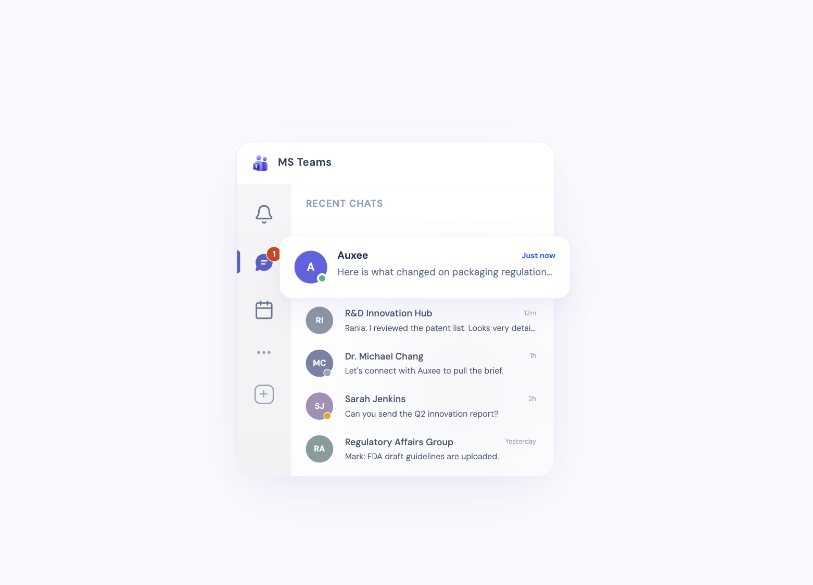

Smarter Feedback Collection
AI-driven insights for enterprise teams. Redesigned the feedback pipeline for a major pharmaceutical client, integrating AI-powered analysis to surface actionable insights from thousands of user responses.

Product Designer @ Prescouter, simplifying complex workflows through AI-driven UX and shipping front-end solutions.
AI-driven insights for enterprise teams. Redesigned the feedback pipeline for a major pharmaceutical client, integrating AI-powered analysis to surface actionable insights from thousands of user responses.
Rethinking how users browse and explore data in an enterprise platform. Designed a flexible view system that transforms dense data tables into visual, scannable gallery cards — giving users a faster, more intuitive way to discover content without sacrificing the depth of structured data.

Designing the onboarding flow that gets packaging and regulatory professionals an AI analyst in MS Teams in under 3 minutes — no IT request, no approval process, no waiting.
